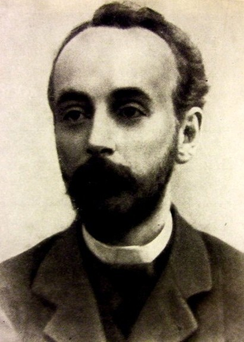

Кржижановский Г.М.
There are no translations available.
Глеб Максимилианович Кржижановский
Деятель революционного движения в России, советский государственный и партийный деятель; учёный-энергетик, академик и вице-президент АН СССР, литератор; советский экономист и экономико-географ. Член ЦИК СССР 1−7 созывов, депутат Верховного Совета СССР 1 созыва, член ЦК ВКП(б) (1903—1905, 1924—1939).
12(24).01.1872—31.03.1959
С тринадцати лет Глеб начал подрабатывать уроками. В 1891 г. вступил в марксистский кружок студентов-технологов, известный под названием группы Бруснева. Читал лекции по марксизму рабочим из брусневской группы.
В 1893 г. познакомился с В. И. Лениным и участвовал в создании «Союза борьбы за освобождение рабочего класса», вел занятия в кружках рабочих (именовался «Григорием Ивановичем»), распространял нелегальную литературу, писал листовки, помогал Ленину в подготовке издания газеты «Рабочее дело».
После института некоторое время работал в Нижнем Новгороде инженером по кустарным промыслам при Нижегородском земстве и принимал участие в деятельности нижегородской социал-демократической группы.
В январе 1895 г. вернулся в Санкт-Петербург, работал в лабораториях технологического института и Александровского завода. В ночь с 8 на 9 декабря был арестован одновременно с Лениным и другими товарищами по «Союзу борьбы» за революционную деятельность.
В 1897—1899 гг содержался в пересыльных тюрьмах Москвы, с 25 марта 1897 г. — в первой партии административно-политссыльных по железной дороге был отправлен из Москвы, 4 апреля 1897 г. прибыл в Красноярск, был сослан в село Тесинское (ныне Тесь) Минусинского уезда Красноярской губернии. Кржижановский встречался со всеми социал-демократами Минусинского округа, был непременным участником их общих встреч. В ссылке он основательно изучал произведения Маркса и Энгельса, в рукописях читал работы В. И. Ленина. В 1899 г. подписал написанный Лениным «Протест российских социал-демократов», направленный против «Кредо» «экономистов».
С октября 1899 г. по февраль 1900 г. работал слесарем, помощником машиниста, машинистом на железной дороге. С 1900 г. — помощник начальника Таежного участка службы тяги.
В сентябре 1901 г. Кржижановские выехали за границу, в Мюнхене встречался с В. И. Лениным. По договоренности с Владимиром Ильичем Г. М. Кржижановский по возвращении в Россию должен был поселиться в Самаре и развернуть нелегальную работу по созданию центральной искровской организации.
С 1902 руководил «искровским центром» в Самаре, где работал в ж.-д. депо, а Зинаида Павловна Кржижановская — работала секретарем Бюро русской организации «Искры».
Входил в Организационный комитет по созыву II съезда РСДРП в 1903 году, на котором заочно был избран членом ЦК партии. Участвовал в подготовке III съезда партии РСДРП.
В 1903 г. Глеб Максимилианович переехал в Киев, работал на Киевской железной дороге. Выезжал в Швейцарию, встречался в Женеве с В. И. Лениным.
В июне 1904 г. вышел из состава ЦК в знак протеста против объединения РСДРП.
В 1905—1906 гг. — бежал в Санкт-Петербург, жил в подполье, изготавливал бомбы для боевой организации большевиков. Участник Революции 1905—07.
В октябре 1905 г. председатель забастовочного комитета Юго-Западных железных дорог.
В начале 1906 г. в Петербурге сотрудничал с большевистской газетой «Волна» и журналом «Мысль».
В 1907—1909 гг. — монтер, инженер, заведующий кабельной сетью «Общества электрического освещения 1886 г.» в Санкт-Петербурге.
В 1909 г. — пишет первую научно-техническую работу «О природе электрического тока».
С 1910—1912 гг. заведовал в Москве кабельной электросетью. В 1910-х гг. руководил строительством электростанций в Подмосковье, выдвинул идею строительства ГЭС под Саратовом (1913). Участвовал в проектировании и строительстве первой в России районной электроцентрали — электростанции на торфе «Электропередача» и с 1912—1922 гг. был её руководителем.
В 1915 г. — Доклад об использовании местных видов топлива. Первая печатная работа.
Во время Февральской революции 1917 г. член большевистской фракции Моссовета. А после февраля был заведующий отделом топлива Моссовета. Участвовал в подготовке вооруженного большевистского восстания в Москве.
После Октябрьской революции 1917 г. работал над восстановлением и развитием энергохозяйства Москвы.
В 1918 г. — председатель Комитета государственных сооружений ВСНХ.
С 1919 г. председатель Главэлектро ВСНХ, проектировал Волжскую ГЭС. 26 декабря — историческая беседа с В. И. Лениным об электрификации страны.
В начале 1920 г. по заданию Ленина написал работу «Основные задачи электрификации России».
В феврале 1920 г. стал председателем Государственной комиссии по электрификации России (ГОЭЛРО), был руководителем работ и автором нескольких разделов плана ГОЭЛРО, выступил с докладом о плане электрификации России на VIII Всероссийском съезде Советов 23 декабря 1920 г.
В 1921—1923 гг., 1925—1930 гг. — первый председатель Госплана. В 1930—1932 гг. председатель Главэнерго Наркомтяжпрома.
В 1922 г. был делегатом Гаагской конференции.
В 1923—1926 гг. был ректором Московского механического института имени М. В. Ломоносова.
С 1925 по 1931 г. член Редакционного совета Большой советской энциклопедии.
В 1927—1930 гг. председатель Комитета по сооружению водной магистрали Волга — Дон.
В 1927—1930 гг. председатель Комитета по стандартизации при Совете Труда и Обороны.
В 1927—1931 гг. член Технического совета Днепростроя.
С 1929 академик АН СССР.
В 1929—1939 гг. вице-президент АН СССР.
Занимая этот пост, он много сил и энергии вложил в создание Отделения технических наук, формирование институтов технического профиля, привлечение в их состав молодых талантливых ученых.
В 1932—1936 гг. председатель Комитета по высшему техническому образованию при ЦИК СССР и заместитель наркома просвещения РСФСР.
С 1930 г. основатель и до конца жизни руководитель Энергетического института АН СССР.
В 1931—1932 гг. председатель Центрального энергетического управления ВСНХ СССР (Энергоцентра СССР), под его руководством начато строительство крупнейших электростанций, на которых еще не так широко, как впоследствии, уже начал использоваться рабский труд заключенных.
В конце 30-х гг. из писем Кржижановского стали известны его нелестные отзывы о Сталине. Кржижановский не был арестован, но вся его деятельность была взята под строгий контроль. Он был отстранен от всякой руководящей работы, имя его замалчивалось.
С 1927 по 1937 гг. — член ВЦИК и ЦИК СССР.
С 1932 по 1936 гг. — председатель Всесоюзного комитета по высшему техническому образованию при ЦИК СССР.
С 1933 по 1937 гг. — председатель Всесоюзного совета научно-инженерных и технических обществ (ВСНИТО).
С 1937 по 1945 гг. — депутат Верховного Совета СССР.
После смерти 31 марта 1959 г. был кремирован, прах помещён в урне в Кремлёвской стене на Красной площади в Москве.
| Комаров Н.П.< Prev | Next >Крупская Н.К. |
|---|